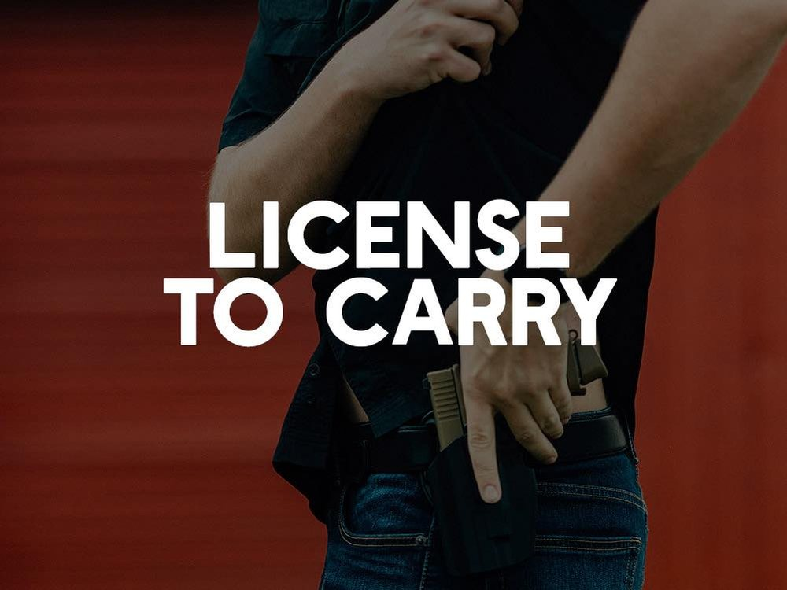
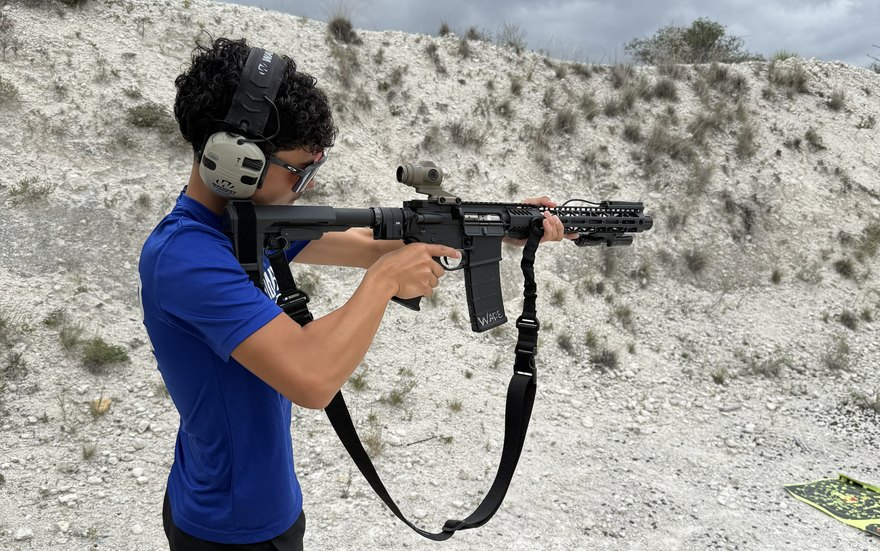
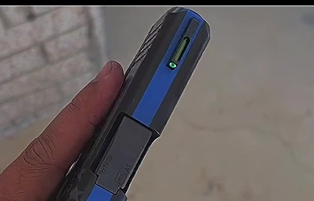
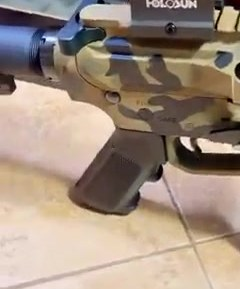
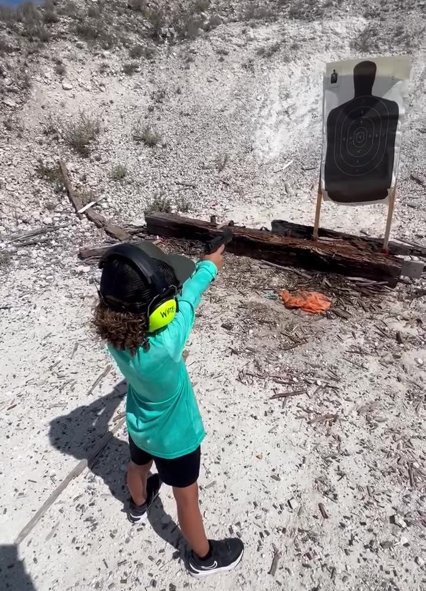
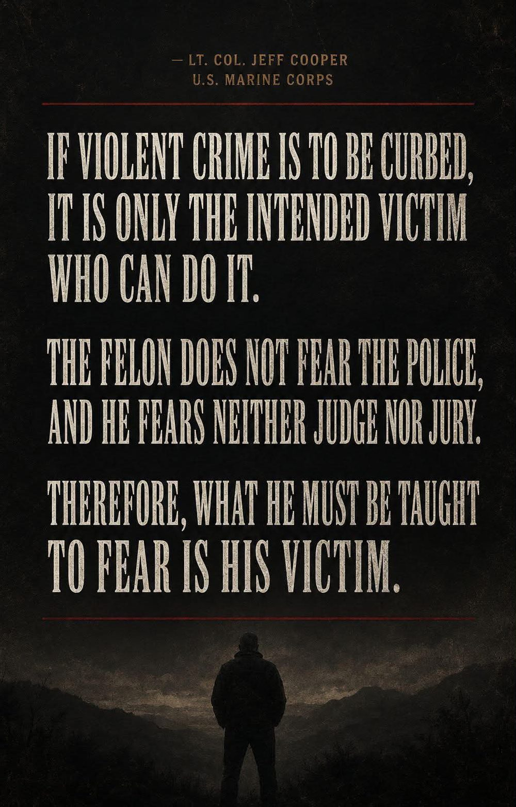
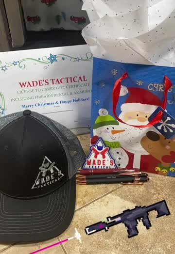
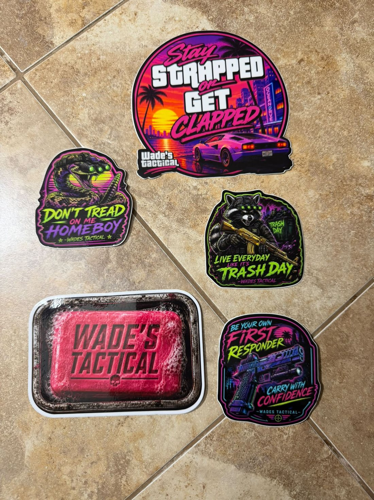
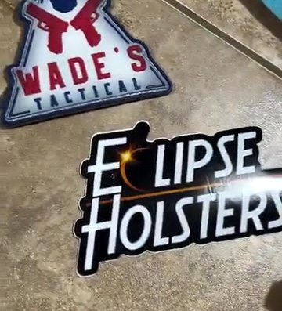

Texas License to Carry classes taught in Del Rio by a DPS-certified firearms instructor — classroom, range qualification, and the honest answers about use of force that most people never get. First-time shooters are more than welcome.
18+ can get a Texas license • Rentals that include ammunition • Basics included at no extra cost
Family owned and taught, right here in Del Rio.
Read this first
Texas has permitless carry — and the two get confused constantly. That confusion is how otherwise law-abiding people end up in a felony situation over a firearm they were legally allowed to own.
Permitless carry does not cover every person, every place, or every situation. A License to Carry does more than make you legal — it teaches you where the lines actually are, what the law says about use of force, and what happens after you've had to make a decision.

What we do
You are not a seat number in a 60-person hotel ballroom. The class is kept small on purpose, the range day is run personally, and if you have never touched a handgun in your life, that is the exact person this class was built for.
The full License to Carry course — classroom instruction, the written exam, and the state range qualification. Held here in Del Rio, usually on a weekend morning at 9am.
Class details →
Can't make a Saturday? Take the classroom portion online, 24/7, at your own pace — then message me and we schedule your range day to qualify.
How it works →
Never fired a handgun, or it's been twenty years? Basic instruction is included at no extra cost. Other instructors charge $200 before you even start the LTC course.
What to expect →
No firearm to qualify with? Rentals are available and they include ammunition. Not sure what to buy yet? Good — shoot a few before you spend the money.
Rental details →
Red dot installation, zeroing, and coaching so you can actually run it fast. Plus Cerakote refinishing and sight installation — night sights, fiber optic, tritium.
See the work →
Wade's Tactical is fully equipped to take a coachable child through proper firearms safety on the range — supervised, structured, and at their pace.
Family training →
Your instructor
I've been teaching firearms training for twelve years and holding a Texas DPS License to Carry instructor certification for more than eight of them. In that time I've walked thousands of people — a lot of them first-time shooters — from nervous to qualified and confident.
I teach here in Del Rio because this is home. My students are neighbors, coworkers, church family, and the people I run into at the store on Sunday. That changes how you teach a class.
Be your own first responder
Home intruders are showing up everywhere — and the average response time is not measured in seconds. Don't count on 7-minute response times from 911 to keep you or your family safe from a potentially deadly situation.
That's not fear-mongering, it's arithmetic. Doing your part as a law-abiding citizen means being capable, being trained, and knowing the law well enough that you never have to guess in the worst moment of your life.

How it works
Classes fill fast — they're usually 50–75% reserved before I even post about them. Send a message, get your name on the list, and ask every question you've got while you're at it.
In person here in Del Rio, or online at your own pace if a weekend doesn't work. Texas law, use of force, non-violent dispute resolution, safe handling and storage.
The state shooting proficiency demonstration. Bring your own handgun or use a rental — ammunition included. If you're new, we start with the basics first, at no extra charge.
You leave with your certificate of training. Submit your application to the Texas Department of Public Safety, and when your license arrives you're carrying in Texas plus 37 more states.
Train on your own time
Not everybody can give up a Saturday morning — and not everything worth knowing fits into one class day. These are self-paced online courses you can take through Wade's Tactical whenever you've got an hour.
The classroom portion of the Texas License to Carry, online, for residents and non-residents. Finish it whenever you like, then message me and we put your range day on the calendar.
Start the course →The whole foundation in one bundle — how handguns work, safe handling, marksmanship, holsters, storage, and the legal side from private sales to police encounters.
See the bundle →No previous medical experience needed. If you carry a gun and not a tourniquet, you've only prepared for half of it. This is the other half.
Start the course →Also from Wade's Tactical
The License to Carry gift bag has become a Del Rio Christmas tradition — class fee, firearm rental and ammunition, a Wade's Tactical hat, a patch and two LTC pens. Give the gift of protection and independence. Delivery available.



Seats are limited every time. Send a message, get your name down, and let's get you qualified.